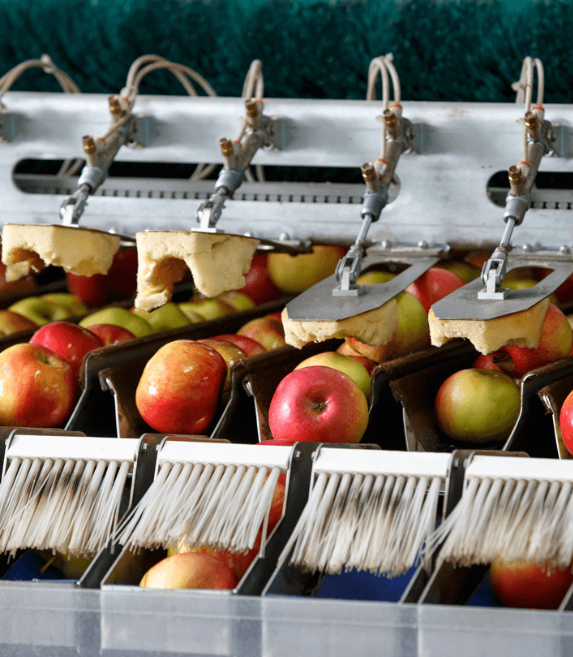
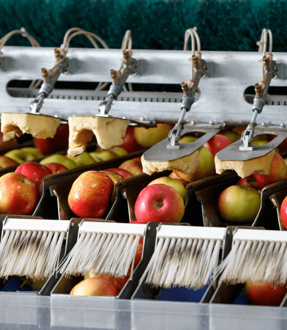

FRESH
ПОЛУНИЦЯ
Площа 54 га
Очікувана врожайність 1229 т
Сорт: Хоней, Зенга-Зенгана, Флоренс, Румба
Період збору врожаю: червень-липень
ДІЗНАЙТЕСЯ БІЛЬШЕ
МАЛИНА
Площа 25,3 га
Очікувана врожайність 200 т
Сорт: Полка, Херітейдж, Полана
Період збору врожаю: серпень-жовтень
ДІЗНАЙТЕСЯ БІЛЬШЕ
ОЖИНА
Площа 15 га
Очікувана врожайність 100 т
Сорт: Лутовка, Ерді, Дебрецема-Бортемо
Період збору врожаю: липень
ДІЗНАЙТЕСЯ БІЛЬШЕ
ВИШНЯ
Площа 88,2 га
Очікувана врожайність 1000 т
Сорт: Лутовка, Ерді, Дебрецема-Бортемо
Період збору врожаю: липень
ДІЗНАЙТЕСЯ БІЛЬШЕ
БРОКОЛІ
Площа 45 га
Очікувана врожайність 800 т
Сорт: Монако, Партеон, Вавілон, Бесті, Корос, Монрело
Період збору врожаю: червень – липень, вересень-жовтень.
ДІЗНАЙТЕСЯ БІЛЬШЕ
ЦВІТНА КАПУСТА
Площа 18 га
Очікувана врожайність 100 т
Сорт: Ардей
Період збору врожаю: липень, жовтень, листопад
ДІЗНАЙТЕСЯ БІЛЬШЕ
БРОССЕЛЬСЬКА КАПУСТА
Площа 6 га
Очікувана врожайність 100 т
Сорт: Профітус, Абакус
Період збору врожаю: вересень-жовтень
ДІЗНАЙТЕСЯ БІЛЬШЕ
ПЕРЕЦЬ
Площа 7 га
Очікувана врожайність 400 т
Сорт: Геркулес, Абей, Амаретто, Хаскі, Вангард, Фламінго
Період збору врожаю: серпень-вересень
ДІЗНАЙТЕСЯ БІЛЬШЕ
ТОМАТИ
Площа 5 га
Очікувана врожайність 400 т
Сорт: Чорний принц, Ред Скай
Період збору врожаю: серпень-жовтень
ДІЗНАЙТЕСЯ БІЛЬШЕ
МОРКВА
Площа 10 га
Очікувана врожайність 1000 т
Сорт: Абако, Бангор, Болівар, Дордонь, Елеганс, Романс
Період збору врожаю: вересень
ДІЗНАЙТЕСЯ БІЛЬШЕ


 
